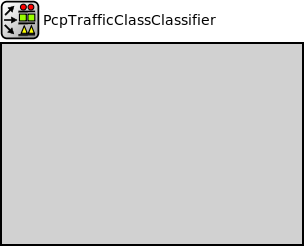

Package: inet.linklayer.ieee8021q
PcpTrafficClassClassifier
compound moduleThis module classifies packets based on the attached PCP value [0, 7]. The PCP is determined by a PcpReq or a PcpInd or both. The output gate index is the value found in the mapping matrix using the PCP value as the row index and the number of connected consumers (traffic categories) as the column index.
Inheritance diagram
The following diagram shows inheritance relationships for this type. Unresolved types are missing from the diagram.
Extends
| Name | Type | Description |
|---|---|---|
| PacketClassifierBase | simple module |
This is a base module for various packet classifier modules. Derived modules must implement a single packet classifier function which determines the index of the output gate for the next pushed packet. |
Parameters
| Name | Type | Default value | Description |
|---|---|---|---|
| displayStringTextFormat | string | "classified %p pk (%l)" |
determines the text that is written on top of the submodule |
| reverseOrder | bool | false | |
| mode | string | "both" | |
| mapping | object | [[0, 0, 0, 0, 0, 1, 1, 1], // BE best effort [0, 0, 0, 0, 0, 0, 0, 0], // BK background [0, 0, 0, 1, 1, 2, 2, 2], // EE excellent effort [0, 0, 0, 1, 1, 2, 3, 3], // CA critical applications [0, 1, 1, 2, 2, 3, 4, 4], // VI video [0, 1, 1, 2, 2, 3, 4, 5], // VO voice [0, 1, 2, 3, 3, 4, 5, 6], // IC internetwork control [0, 1, 2, 3, 4, 5, 6, 7]] |
IEEE Standard for Local and Metropolitan Area Networks, Bridges and Bridged Networks Table 8-5—Recommended priority to traffic class mappings |
| defaultGateIndex | int | 0 |
default gate index if no PCP found |
Properties
| Name | Value | Description |
|---|---|---|
| display | i=block/classifier | |
| class | PcpTrafficClassClassifier |
Gates
| Name | Direction | Size | Description |
|---|---|---|---|
| in | input | ||
| out [ ] | output |
Signals
| Name | Type | Unit |
|---|---|---|
| packetPushed | inet::Packet |
Statistics
| Name | Title | Source | Record | Unit | Interpolation Mode |
|---|---|---|---|---|---|
| packetLengths | packet lengths | packetLength(packetPushed) | sum, histogram, vector | b | none |
| dataRate | data rate | throughput(packetPushed) | vector | bps | linear |
| packets | packets | packetPushed | count | pk |
Source code
// // This module classifies packets based on the attached PCP value [0, 7]. The // PCP is determined by a PcpReq or a PcpInd or both. The output gate index is // the value found in the mapping matrix using the PCP value as the row index // and the number of connected consumers (traffic categories) as the column // index. // module PcpTrafficClassClassifier extends PacketClassifierBase like IPacketClassifier { parameters: string mode @enum("req","ind","both") = default("both"); // IEEE Standard for Local and Metropolitan Area Networks, Bridges and Bridged Networks // Table 8-5—Recommended priority to traffic class mappings // IC internetwork control // VO voice // VI video // CA critical applications // EE excellent effort // BK background // BE best effort object mapping = default([[0, 0, 0, 0, 0, 1, 1, 1], // BE best effort [0, 0, 0, 0, 0, 0, 0, 0], // BK background [0, 0, 0, 1, 1, 2, 2, 2], // EE excellent effort [0, 0, 0, 1, 1, 2, 3, 3], // CA critical applications [0, 1, 1, 2, 2, 3, 4, 4], // VI video [0, 1, 1, 2, 2, 3, 4, 5], // VO voice [0, 1, 2, 3, 3, 4, 5, 6], // IC internetwork control [0, 1, 2, 3, 4, 5, 6, 7]]); // NC network control int defaultGateIndex = default(0); // default gate index if no PCP found @class(PcpTrafficClassClassifier); }File: src/inet/linklayer/ieee8021q/PcpTrafficClassClassifier.ned
 This documentation is released under the Creative Commons license
This documentation is released under the Creative Commons license